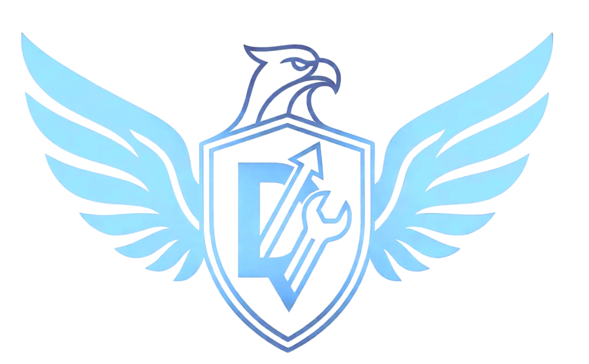
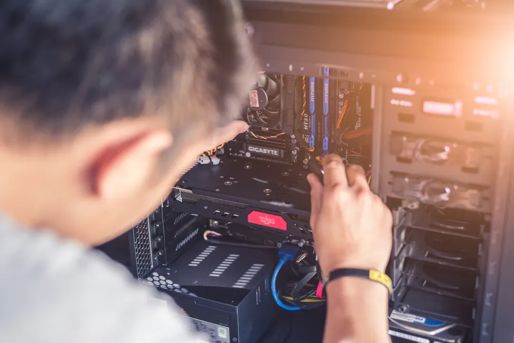
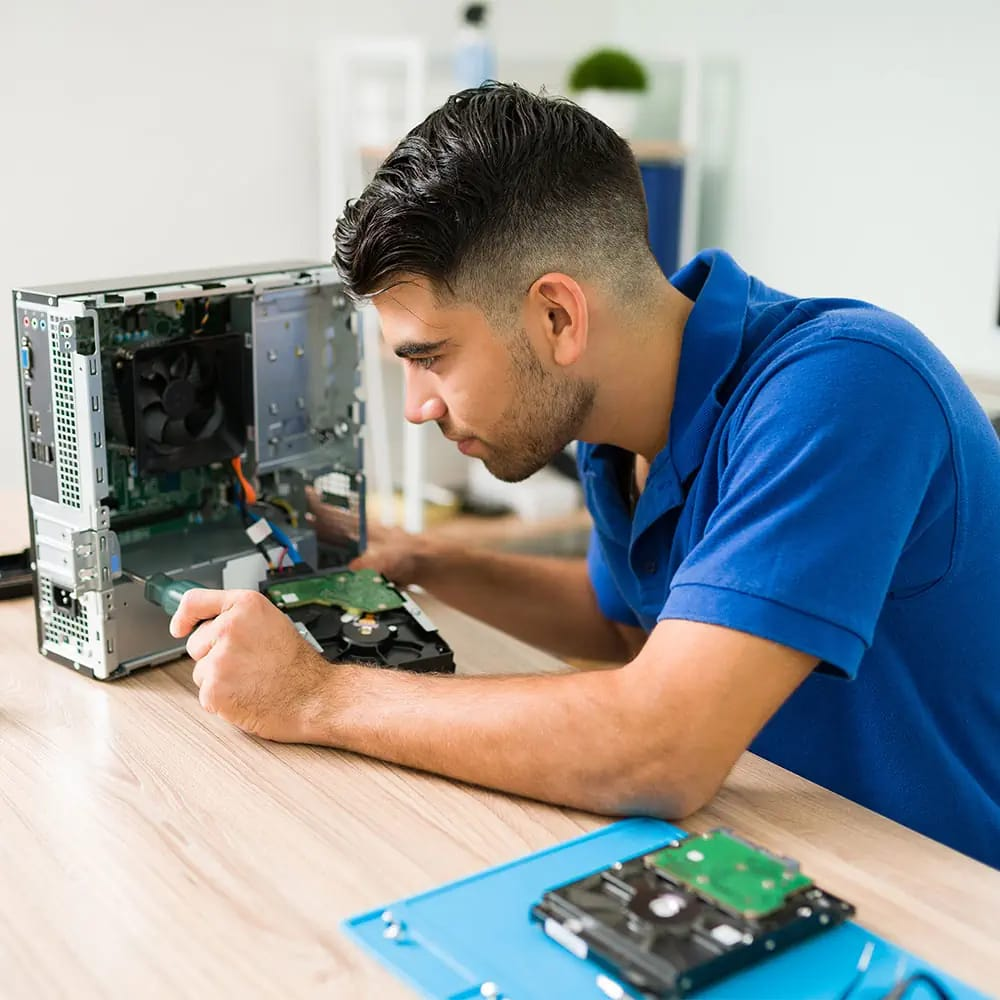
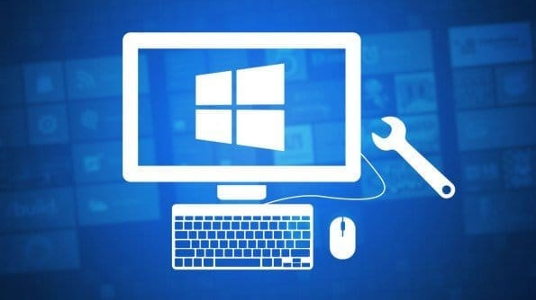
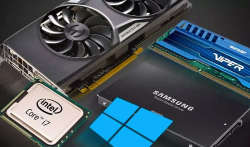

Empresa numero 1 en mantenimiento a computadoras
Dexia es una empresa dedicada a brindar soporte técnico y mantenimiento a equipos de cómputo, como PC, laptops, MacBook y servidores. Su objetivo principal es garantizar el correcto funcionamiento de los dispositivos, ofreciendo soluciones eficientes para prevenir fallas y optimizar el rendimiento. Además, Dexia se enfoca en proporcionar un servicio confiable y de calidad, adaptándose a las necesidades de cada cliente, ya sea a nivel personal o empresarial.

Ofrecemos limpieza y optimizacion de tu computadora.
Instalamos programas basicos y antivirus.

Vamos hasta tu casa para resolver problemas tecnicos.
Quitamos virus que hacen lenta la compu o fallas raras.

Se formatea el equipo para que funcione mejor otra vez.

Cambiamos piezas como RAM o disco para mejorar rendimiento.